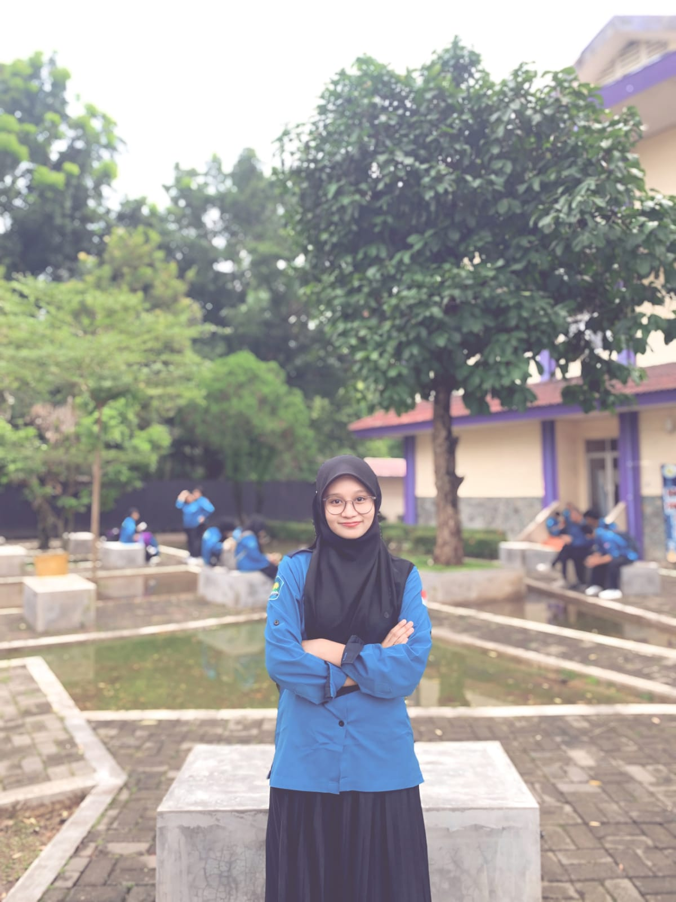

Platform pemetaan interaktif berbasis data spasial untuk menganalisis distribusi Puskesmas, Klinik, dan Rumah Sakit di Kota Medan berdasarkan kepadatan penduduk.
Teknologi dan kemudahan dalam satu platform
Visualisasi 50+ fasilitas kesehatan dengan deteksi lokasi pengguna otomatis dan zoom adaptif.
Filter berdasarkan jenis fasilitas dan pencarian cepat per kecamatan.
Perhitungan jarak dan rute mengikuti jalan aktual menggunakan OSRM API gratis.
Evaluasi rasio fasilitas kesehatan berdasarkan kepadatan penduduk.
Tiga langkah mudah menggunakan sistem
Izinkan akses lokasi agar sistem dapat menghitung jarak terdekat.
Gunakan filter dan klik marker untuk melihat detail fasilitas.
Gunakan data spasial untuk analisis dan pelaporan.
Ringkasan cakupan HealthMap Medan
Di balik layar HealthMap Medan

NIM: 2305181018
Program Studi: Teknologi Rekayasa Perangkat Lunak
Institusi: Politeknik Negeri Medan